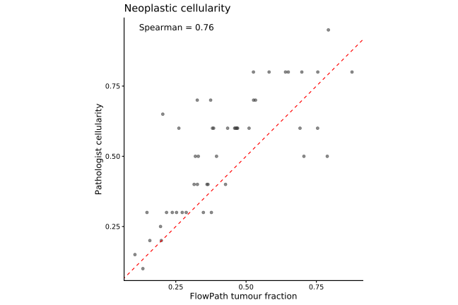
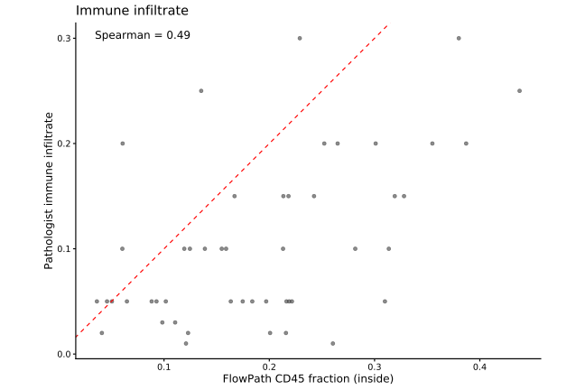
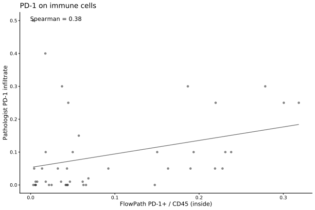
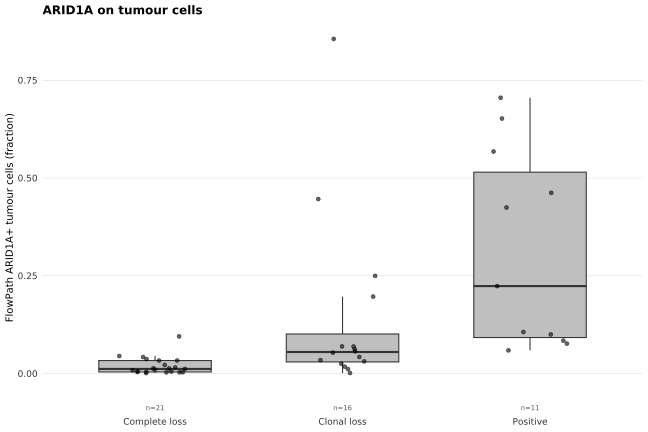
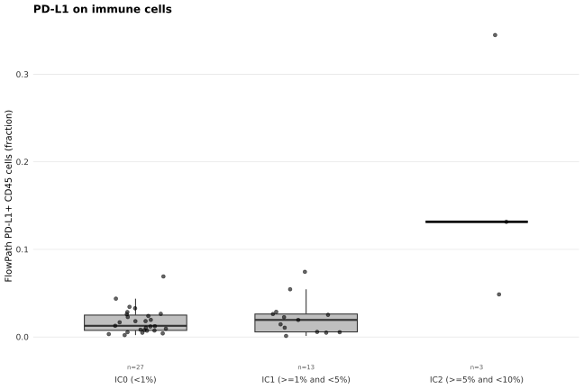
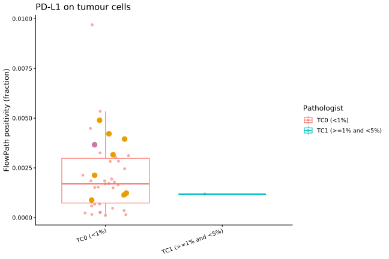

Last updated: 2026-09-01
Checks: 7 0
Knit directory:
attend_aneuploidy/analysis/
This reproducible R Markdown analysis was created with workflowr (version 1.7.2). The Checks tab describes the reproducibility checks that were applied when the results were created. The Past versions tab lists the development history.
Great! Since the R Markdown file has been committed to the Git repository, you know the exact version of the code that produced these results.
Great job! The global environment was empty. Objects defined in the global environment can affect the analysis in your R Markdown file in unknown ways. For reproduciblity it’s best to always run the code in an empty environment.
The command set.seed(20260622) was run prior to running
the code in the R Markdown file. Setting a seed ensures that any results
that rely on randomness, e.g. subsampling or permutations, are
reproducible.
Great job! Recording the operating system, R version, and package versions is critical for reproducibility.
Nice! There were no cached chunks for this analysis, so you can be confident that you successfully produced the results during this run.
Great job! Using relative paths to the files within your workflowr project makes it easier to run your code on other machines.
Great! You are using Git for version control. Tracking code development and connecting the code version to the results is critical for reproducibility.
The results in this page were generated with repository version 359bdc9. See the Past versions tab to see a history of the changes made to the R Markdown and HTML files.
Note that you need to be careful to ensure that all relevant files for
the analysis have been committed to Git prior to generating the results
(you can use wflow_publish or
wflow_git_commit). workflowr only checks the R Markdown
file, but you know if there are other scripts or data files that it
depends on. Below is the status of the Git repository when the results
were generated:
Ignored files:
Ignored: .RData
Ignored: .Rhistory
Ignored: .Rproj.user/
Ignored: data/aneu_scores.csv
Ignored: data/attend_barcodes.csv
Ignored: data/attend_data.xlsx
Ignored: data/clinical_gianlu_data.csv
Ignored: data/cnv_annotations/
Ignored: data/gistic/
Ignored: data/hrd_scores.csv
Ignored: data/msi_scores.csv
Ignored: data/old_gistic/
Ignored: data/seg/
Ignored: data/tcga_2013/
Ignored: data/tmb_scores.csv
Ignored: data/variant_annotations/
Ignored: output/clean_data/
Note that any generated files, e.g. HTML, png, CSS, etc., are not included in this status report because it is ok for generated content to have uncommitted changes.
These are the previous versions of the repository in which changes were
made to the R Markdown
(analysis/02-flowpath-concordance.Rmd) and HTML
(docs/02-flowpath-concordance.html) files. If you’ve
configured a remote Git repository (see ?wflow_git_remote),
click on the hyperlinks in the table below to view the files as they
were in that past version.
| File | Version | Author | Date | Message |
|---|---|---|---|---|
| Rmd | fe030a0 | bolt3x | 2026-08-17 | :bug: Report 07’s oncoplots were skipped by a gate that could not say why |
| Rmd | 628db09 | bolt3x | 2026-08-14 | :art: Standardize the figure system across every report |
| html | ed3a227 | sceriff0 | 2026-08-13 | :wrench: first site |
| Rmd | 809ba92 | bolt3x | 2026-08-13 | :recycle: Hyphenate every report filename and fix the source-code link |
Question. Does FlowPath’s automated quantification agree with the pathologist’s eye? Cohort. All patients with IHC data (48 images); no molecular restriction. Reads. The FlowPath export and the imaging annotation sheet, via load_ihc_data() and load_imaging_data(). Out of scope. What composition means biologically -> 05-aneuploidy-mmrd. Survival by immune content -> 04-survival.
FlowPath counts individual cells on each IHC slide and turns them into positivity and composition fractions; a pathologist independently scored the same slides by eye. This is a measurement-validation question, so it runs on every imaged patient — restricting it to a molecular subgroup would only make it noisier.
The FlowPath export is keyed by image_id, the imaging annotation sheet carries both image_id and the patient id, and the master is keyed by pid. Everything is put onto pid through the image crosswalk built in code/attend_harmonise.R — the same one 01-data-integration used, so this report’s cohort cannot drift from the master’s. The two counts below are the ceiling for everything that follows: rows that fail to map are invisible to every figure in this report.
id_cfg <- make_id_cfg()
cw_image_pid <- build_image_pid(imaging_data, id_cfg) # image -> pid
cw_barcode_pid <- build_barcode_pid(load_gianlu_clinical_data(), id_cfg)
pid_vector <- make_pid_vector(cw_barcode_pid, cw_image_pid)
ihc_pid <- ihc_data |> mutate(pid = pid_vector(ihc_data, id_cfg$ihc))
imaging_pid <- imaging_data |> mutate(pid = pid_vector(imaging_data, id_cfg$imaging))
cat("IHC rows mapped to a patient :", sum(!is.na(ihc_pid$pid)), "/", nrow(ihc_pid), "\n")IHC rows mapped to a patient : 48 / 48 cat("imaging rows mapped to a patient:", sum(!is.na(imaging_pid$pid)), "/", nrow(imaging_pid), "\n")imaging rows mapped to a patient: 126 / 134 Per-image FlowPath counts joined to the pathologist annotations, with the positivity/composition ratios derived by ihc_image_metrics() (code/attend_ihc.R). The summary table describes the cohort the IHC slides came from — not the whole ATTEND cohort, which is the relevant denominator here.
ihc_img <- ihc_image_metrics(ihc_data, imaging_data)
cat("IHC images joined to imaging annotations:", sum(!is.na(ihc_img$ID)), "/", nrow(ihc_img), "\n")IHC images joined to imaging annotations: 48 / 48 if (requireNamespace("gtsummary", quietly = TRUE)) {
ihc_img |>
select(any_of(c("MSI_Status", "treatment", "ARID1A", "MMR_Status"))) |>
gtsummary::tbl_summary()
}| Characteristic | N = 481 |
|---|---|
| MSI_Status | |
| Instable (MSI) | 41 (85%) |
| Stable (MSS) | 7 (15%) |
| treatment | |
| Atezolizumab | 30 (63%) |
| Placebo | 18 (38%) |
| ARID1A | |
| Clonal loss | 16 (33%) |
| Complete loss | 21 (44%) |
| Positive | 11 (23%) |
| MMR_Status | |
| Deficient | 41 (85%) |
| Intact | 7 (15%) |
| 1 n (%) | |
For these three, the pathologist also gave a number, so the two methods can be plotted against each other directly. Each point is one image. The dashed red line is x = y, perfect agreement: points systematically above it mean the pathologist scored higher than FlowPath, below it the reverse. Spearman’s rho measures whether the two rank images the same way, which is the weaker but more robust claim — a high rho with points far off the diagonal means consistent but miscalibrated.
Pathologist percentages are divided by 100 so both axes are fractions.
FlowPath tumour fraction = all tumour cells / all cells, against the pathologist’s neoplastic-cellularity percentage.
cc <- ihc_img |>
transmute(ID, # ID == pid; kept so the highlight can match
flowpath = tumor_over_all,
pathologist = suppressWarnings(as.numeric(Neoplastic_cellularity)) / 100) |>
filter(!is.na(flowpath), !is.na(pathologist))
if (nrow(cc) > 2) {
rho <- cor(cc$flowpath, cc$pathologist, method = "spearman", use = "complete.obs")
ggplot(cc, aes(flowpath, pathologist)) +
highlight_points(cc, "flowpath", "pathologist", jitter_width = 0, base_size = 1.5, base_alpha = 0.6) +
geom_abline(slope = 1, linetype = "dashed", colour = "grey40") +
coord_equal() +
annotate("text", x = -Inf, y = Inf, hjust = -0.2, vjust = 2,
label = paste0("Spearman = ", round(rho, 2))) +
labs(title = "Neoplastic cellularity", x = "FlowPath tumour fraction",
y = "Pathologist cellularity") +
attend_theme()
}
| Version | Author | Date |
|---|---|---|
| ed3a227 | sceriff0 | 2026-08-13 |
FlowPath immune content = CD45+ cells / all cells inside the annotation, against the pathologist’s immune-infiltrate percentage.
ii <- ihc_img |>
transmute(ID,
flowpath = cd45_over_inside,
pathologist = suppressWarnings(as.numeric(Immune_infiltrate)) / 100) |>
filter(!is.na(flowpath), !is.na(pathologist))
if (nrow(ii) > 2) {
rho <- cor(ii$flowpath, ii$pathologist, method = "spearman", use = "complete.obs")
ggplot(ii, aes(flowpath, pathologist)) +
highlight_points(ii, "flowpath", "pathologist", jitter_width = 0, base_size = 1.5, base_alpha = 0.6) +
geom_abline(slope = 1, linetype = "dashed", colour = "grey40") +
coord_equal() +
annotate("text", x = -Inf, y = Inf, hjust = -0.2, vjust = 2,
label = paste0("Spearman = ", round(rho, 2))) +
labs(title = "Immune infiltrate", x = "FlowPath CD45 fraction (inside)",
y = "Pathologist immune infiltrate") +
attend_theme()
}
| Version | Author | Date |
|---|---|---|
| ed3a227 | sceriff0 | 2026-08-13 |
FlowPath PD-1+ immune = PD-1+ CD45 cells / CD45 cells inside the annotation. A linear trend line replaces the x = y line here, because the pathologist’s PD-1 score is not on the same scale as the FlowPath fraction — only the ranking is comparable.
pd1 <- ihc_img |>
transmute(ID,
flowpath = cd45_pd1_over_cd45_inside,
pathologist = suppressWarnings(as.numeric(Immune_infiltrate_PD1)) / 100) |>
filter(!is.na(flowpath), !is.na(pathologist))
if (nrow(pd1) > 2) {
rho <- cor(pd1$flowpath, pd1$pathologist, method = "spearman", use = "complete.obs")
ggplot(pd1, aes(flowpath, pathologist)) +
highlight_points(pd1, "flowpath", "pathologist", jitter_width = 0, base_size = 1.5, base_alpha = 0.6) +
geom_smooth(method = "lm", se = FALSE, colour = "grey40", linewidth = 0.6) +
annotate("text", x = -Inf, y = Inf, hjust = -0.2, vjust = 2,
label = paste0("Spearman = ", round(rho, 2))) +
labs(title = "PD-1 on immune cells", x = "FlowPath PD-1+ / CD45 (inside)",
y = "Pathologist PD-1 infiltrate") +
attend_theme()
}
| Version | Author | Date |
|---|---|---|
| ed3a227 | sceriff0 | 2026-08-13 |
For these three the pathologist gave a category, not a number, so the comparison is a boxplot: the FlowPath fraction distribution within each pathologist call. Concordance looks like boxes that step monotonically across the categories. Overlapping boxes mean the automated fraction does not reproduce the call.
FlowPath ARID1A+ = ARID1A+ tumour cells / tumour cells inside the annotation. The pathologist’s categories run from complete loss through clonal loss to positive, so the FlowPath fraction should increase left to right.
if ("ARID1A" %in% names(ihc_img)) {
d <- ihc_img |>
mutate(ARID1A = factor(ARID1A, levels = c("Complete loss", "Clonal loss", "Positive"))) |>
filter(!is.na(ARID1A), !is.na(tumor_aridia_over_tumor_inside))
# `colour = ARID1A` duplicated the x axis, spending the palette and a whole "Pathologist"
# legend on information the ticks already carry. Points come from highlight_points(); the
# pathologist categories are small (e.g. "Complete loss"), so attend_box() picks the mark.
ggplot(d, aes(ARID1A, tumor_aridia_over_tumor_inside)) +
attend_box(d, x = "ARID1A", y = "tumor_aridia_over_tumor_inside", points = FALSE) +
highlight_points(d, "ARID1A", "tumor_aridia_over_tumor_inside", base_const = "black",
jitter_width = 0.2, base_size = 1.5, base_alpha = 0.6) +
labs(title = "ARID1A on tumour cells", x = NULL,
y = "FlowPath ARID1A+ tumour cells (fraction)") +
attend_theme()
}
| Version | Author | Date |
|---|---|---|
| ed3a227 | sceriff0 | 2026-08-13 |
FlowPath PD-L1+ immune = PD-L1+ CD45 cells / CD45 cells inside. The pathologist’s IC categories are explicit percentage bands (IC0 < 1%, IC1 1–5%, IC2 5–10%), so this is the strictest of the categorical checks — the FlowPath fraction should land inside the named band, not merely increase across bands.
if ("Immune_infiltrate_PDL1" %in% names(ihc_img)) {
d <- ihc_img |>
mutate(Immune_infiltrate_PDL1 = factor(Immune_infiltrate_PDL1,
levels = c("", "IC0 (<1%)", "IC1 (>=1% and <5%)", "IC2 (>=5% and <10%)"))) |>
filter(!is.na(Immune_infiltrate_PDL1), !is.na(cd45_pdl1_over_cd45_inside))
ggplot(d, aes(Immune_infiltrate_PDL1, cd45_pdl1_over_cd45_inside)) +
attend_box(d, x = "Immune_infiltrate_PDL1", y = "cd45_pdl1_over_cd45_inside", points = FALSE) +
highlight_points(d, "Immune_infiltrate_PDL1", "cd45_pdl1_over_cd45_inside",
base_const = "black",
jitter_width = 0.2, base_size = 1.5, base_alpha = 0.6) +
labs(title = "PD-L1 on immune cells", x = NULL,
y = "FlowPath PD-L1+ CD45 cells (fraction)") +
attend_theme()
}
| Version | Author | Date |
|---|---|---|
| ed3a227 | sceriff0 | 2026-08-13 |
FlowPath PD-L1+ tumour = PD-L1+ tumour cells / tumour cells inside the annotation.
if ("Tumor_cells_PDL1" %in% names(ihc_img)) {
d <- ihc_img |>
filter(!is.na(Tumor_cells_PDL1), Tumor_cells_PDL1 != "", !is.na(tumor_pdl1_over_tumor_inside))
ggplot(d, aes(Tumor_cells_PDL1, tumor_pdl1_over_tumor_inside)) +
attend_box(d, x = "Tumor_cells_PDL1", y = "tumor_pdl1_over_tumor_inside", points = FALSE) +
highlight_points(d, "Tumor_cells_PDL1", "tumor_pdl1_over_tumor_inside",
base_const = "black",
jitter_width = 0.2, base_size = 1.5, base_alpha = 0.6) +
labs(title = "PD-L1 on tumour cells", x = NULL,
y = "FlowPath PD-L1+ tumour cells (fraction)") +
attend_theme() +
theme(axis.text.x = element_text(angle = 20, hjust = 1))
}
| Version | Author | Date |
|---|---|---|
| ed3a227 | sceriff0 | 2026-08-13 |
Everything above is per image. A patient can contribute several images, so the metrics are collapsed to one row per patient (mean across that patient’s images) before being used against patient-level variables. ihc_patient_metrics() is the entry point 04-survival and 05-aneuploidy-mmrd call to get the same per-patient values.
ihc_pt <- ihc_patient_metrics(ihc_data, imaging_data)
glimpse(ihc_pt)Rows: 48
Columns: 7
$ pid <chr> "0101-005", "0101-007", "0101-010", "01…
$ tumor_over_all <dbl> 0.3152985, 0.1048114, 0.1985659, 0.6918…
$ cd45_over_inside <dbl> 0.06040798, 0.19704487, 0.25222497, 0.3…
$ tumor_aridia_over_tumor_inside <dbl> 0.015536721, 0.059361196, 0.022086530, …
$ tumor_pdl1_over_tumor_inside <dbl> 0.0044826845, 0.0030241250, 0.001245154…
$ cd45_pd1_over_cd45_inside <dbl> 0.024887759, 0.004196315, 0.044679154, …
$ cd45_pdl1_over_cd45_inside <dbl> 0.024006777, 0.007297938, 0.005746362, …sessionInfo()R version 4.3.2 (2023-10-31)
Platform: x86_64-pc-linux-gnu (64-bit)
Running under: Rocky Linux 9.5 (Blue Onyx)
Matrix products: default
BLAS/LAPACK: FlexiBLAS OPENBLAS; LAPACK version 3.11.0
locale:
[1] LC_CTYPE=C.UTF-8 LC_NUMERIC=C LC_TIME=C.UTF-8
[4] LC_COLLATE=C.UTF-8 LC_MONETARY=C.UTF-8 LC_MESSAGES=C.UTF-8
[7] LC_PAPER=C.UTF-8 LC_NAME=C LC_ADDRESS=C
[10] LC_TELEPHONE=C LC_MEASUREMENT=C.UTF-8 LC_IDENTIFICATION=C
time zone: Europe/Rome
tzcode source: system (glibc)
attached base packages:
[1] stats graphics grDevices utils datasets methods base
other attached packages:
[1] readxl_1.5.0 data.table_1.18.4 fs_2.1.0 here_1.0.2
[5] lubridate_1.9.5 forcats_1.0.1 stringr_1.6.0 dplyr_1.2.1
[9] purrr_1.0.2 readr_2.2.0 tidyr_1.3.2 tibble_3.3.1
[13] ggplot2_4.0.3 tidyverse_2.0.0
loaded via a namespace (and not attached):
[1] gtable_0.3.6 xfun_0.58 bslib_0.9.0 lattice_0.22-5
[5] tzdb_0.5.0 vctrs_0.7.3 tools_4.3.2 generics_0.1.4
[9] pkgconfig_2.0.3 Matrix_1.6-4 RColorBrewer_1.1-3 S7_0.2.2
[13] gt_1.3.0 lifecycle_1.0.5 compiler_4.3.2 farver_2.1.2
[17] git2r_0.33.0 httpuv_1.6.12 litedown_0.9 htmltools_0.5.9
[21] sass_0.4.10 yaml_2.3.12 later_1.4.8 pillar_1.11.1
[25] jquerylib_0.1.4 whisker_0.4.1 cachem_1.1.0 nlme_3.1-164
[29] commonmark_2.0.0 tidyselect_1.2.1 digest_0.6.39 stringi_1.8.7
[33] gtsummary_2.5.1 labeling_0.4.3 splines_4.3.2 rprojroot_2.1.1
[37] fastmap_1.2.0 grid_4.3.2 cli_3.6.6 magrittr_2.0.5
[41] cards_0.8.0 dichromat_2.0-0.1 withr_3.0.3 scales_1.4.0
[45] promises_1.5.0 timechange_0.4.0 rmarkdown_2.31 otel_0.2.0
[49] workflowr_1.7.2 cellranger_1.1.0 hms_1.1.4 evaluate_1.0.5
[53] knitr_1.51 markdown_2.0 mgcv_1.9-0 rlang_1.2.0
[57] Rcpp_1.1.1-1.1 glue_1.8.1 xml2_1.5.2 rstudioapi_0.15.0
[61] jsonlite_2.0.0 R6_2.6.1
sessionInfo()R version 4.3.2 (2023-10-31)
Platform: x86_64-pc-linux-gnu (64-bit)
Running under: Rocky Linux 9.5 (Blue Onyx)
Matrix products: default
BLAS/LAPACK: FlexiBLAS OPENBLAS; LAPACK version 3.11.0
locale:
[1] LC_CTYPE=C.UTF-8 LC_NUMERIC=C LC_TIME=C.UTF-8
[4] LC_COLLATE=C.UTF-8 LC_MONETARY=C.UTF-8 LC_MESSAGES=C.UTF-8
[7] LC_PAPER=C.UTF-8 LC_NAME=C LC_ADDRESS=C
[10] LC_TELEPHONE=C LC_MEASUREMENT=C.UTF-8 LC_IDENTIFICATION=C
time zone: Europe/Rome
tzcode source: system (glibc)
attached base packages:
[1] stats graphics grDevices utils datasets methods base
other attached packages:
[1] readxl_1.5.0 data.table_1.18.4 fs_2.1.0 here_1.0.2
[5] lubridate_1.9.5 forcats_1.0.1 stringr_1.6.0 dplyr_1.2.1
[9] purrr_1.0.2 readr_2.2.0 tidyr_1.3.2 tibble_3.3.1
[13] ggplot2_4.0.3 tidyverse_2.0.0
loaded via a namespace (and not attached):
[1] gtable_0.3.6 xfun_0.58 bslib_0.9.0 lattice_0.22-5
[5] tzdb_0.5.0 vctrs_0.7.3 tools_4.3.2 generics_0.1.4
[9] pkgconfig_2.0.3 Matrix_1.6-4 RColorBrewer_1.1-3 S7_0.2.2
[13] gt_1.3.0 lifecycle_1.0.5 compiler_4.3.2 farver_2.1.2
[17] git2r_0.33.0 httpuv_1.6.12 litedown_0.9 htmltools_0.5.9
[21] sass_0.4.10 yaml_2.3.12 later_1.4.8 pillar_1.11.1
[25] jquerylib_0.1.4 whisker_0.4.1 cachem_1.1.0 nlme_3.1-164
[29] commonmark_2.0.0 tidyselect_1.2.1 digest_0.6.39 stringi_1.8.7
[33] gtsummary_2.5.1 labeling_0.4.3 splines_4.3.2 rprojroot_2.1.1
[37] fastmap_1.2.0 grid_4.3.2 cli_3.6.6 magrittr_2.0.5
[41] cards_0.8.0 dichromat_2.0-0.1 withr_3.0.3 scales_1.4.0
[45] promises_1.5.0 timechange_0.4.0 rmarkdown_2.31 otel_0.2.0
[49] workflowr_1.7.2 cellranger_1.1.0 hms_1.1.4 evaluate_1.0.5
[53] knitr_1.51 markdown_2.0 mgcv_1.9-0 rlang_1.2.0
[57] Rcpp_1.1.1-1.1 glue_1.8.1 xml2_1.5.2 rstudioapi_0.15.0
[61] jsonlite_2.0.0 R6_2.6.1